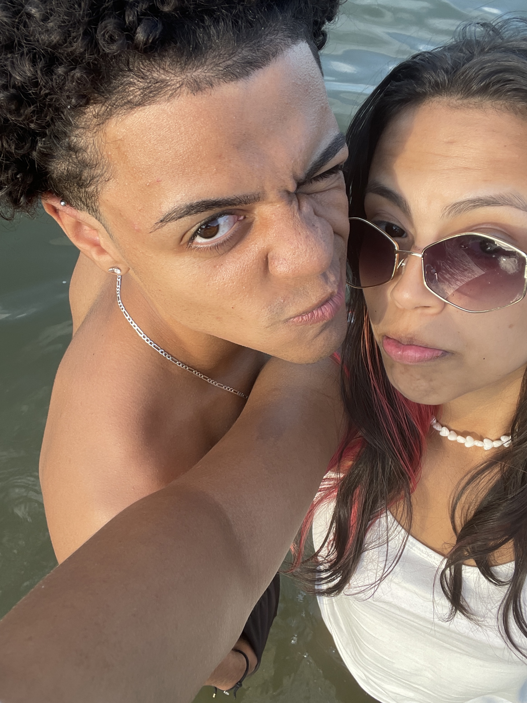
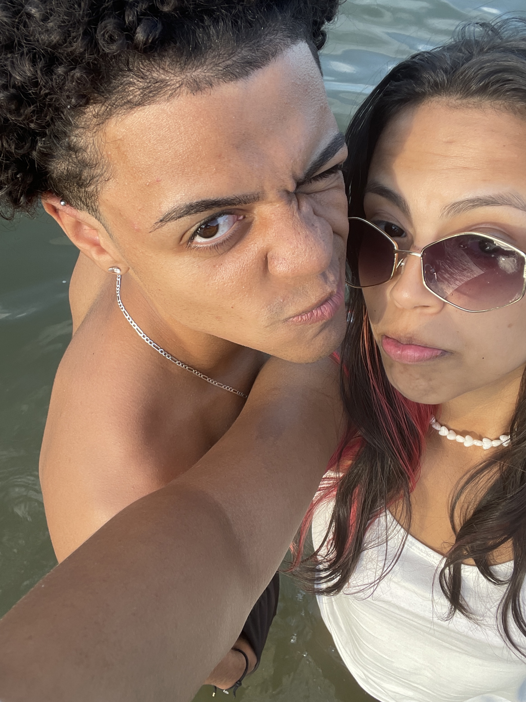

No vai e vem do mar eu aprendi a te amar,
E em cada onda, quis te abraçar.
Teu sorriso acende o céu ao anoitecer,
E teus olhos são versos difíceis de escrever.
Seu cabelo é fogo, Marte em movimento,
Tua pele, poesia, meu encantamento.
Dormir te ouvindo é canção de ninar,
Como se o mundo parasse só pra eu te amar.
Se exagero, me perdoa, é amor demais,
Um amor que transborda em todos os sinais.
Mesmo em sete vidas, entre céu e chão,
Encontraria você — meu lar, minha razão.


 
